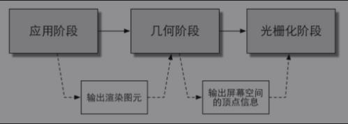

渲染流水线
什么是渲染流水线
计算机需要从一系列的顶点数据、纹理等信息出发，把这些信息最终转换成一张人眼可以看到的图像。而这个工作通常是由CPU和GPU共同完成的。
简单来说就是把三位数据转换成屏幕上显示的二位图片。
分为三个阶段：应用阶段（Application Stage）、几何阶段（Geometry Stage）、光栅化阶段（Rasterizer Stage）。

应用阶段
这个阶段是由我们的应用主导的，因此通常由CPU负责实现。换句话说，我们这些开发者具有这个阶段的绝对控制权。
这个阶段的三个主要任务：
- 准备好场景数据，例如摄像机的位置、视锥体、场景中包含了哪些模型、使用了哪些光源等等。
- 剔除看不见的物体，提高性能。这样就不用在几何阶段处理了。
- 设置每个模型的渲染状态。渲染状态包括但不限于材质（漫反射颜色、高光反射颜色）、纹理、Shader等。这一阶段最重要的输出是渲染所需的几何信息，即渲染图元（点、线、面）。
这里我个人理解为：这个过程是Unity控制的，就像把fbx拖入Unity中就完成了1，把拖到场景中就时Unity会自动剔除看不见的面就完成了2。
几何阶段
处理所有和我们要绘制的几何相关的事情。例如，决定需要绘制的图元是什么，怎样绘制它们，在哪里绘制它们。这一阶段通常在GPU上进行。
几何阶段负责和每个渲染图元打交道，进行逐顶点、逐多边形的操作。
几何阶段的一个重要任务就是把顶点坐标变换到屏幕空间中，再交给光栅器进行处理。
通过对输入的渲染图元进行多步处理后，这一阶段将会输出屏幕空间的二维顶点坐标、每个顶点对应的深度值、着色等相关信息，并传递给下一个阶段。
我的理解：几何阶段负责渲染模型的线框。对应的是Vertex函数
光栅化阶段
使用上个阶段传递的数据来产生屏幕上的像素，并渲染出最终的图像。
这一阶段也是在GPU上运行。
光栅化的任务主要是决定每个渲染图元中的哪些像素应该被绘制在屏幕上。
它需要对上一个阶段得到的逐顶点数据（例如纹理坐标、顶点颜色等）进行插值，然后再进行逐像素处理。
我的理解：光栅化阶段复制对模型上色。对应Fragment函数
本博客所有文章除特别声明外，均采用 CC BY-NC-SA 4.0 许可协议。转载请注明来自 周末的游戏之旅！
相关推荐


评论